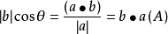

数学
目录
●函数值域
●“括号”内变化（抽象函数）——伸缩平移值域不变
●常数/函数——极限
●半次+半次——前后次数一样，整体平方
●两类相加——分别画图
●一次+半次——凑半次
●一次比一次——值域≠一次比
●三角恒等变换公式集
●向量
●两向量垂直定则
●两向量平行定则
●投影式的变形
●向量的余弦定理
●向量的正弦定理
函数值域
1.“括号”内变化（抽象函数）——伸缩平移值域不变
已知 y=f(x) 的值域是[0,3]，则函数 F(x)=2-f(x-3) 的值域是什么？
∵f(x)的值域与f(x-3)的值域相同。
∴答案为 [-3,0]→[-1,2]。
2.常数/函数——极限
已知 f(x)=(1/x^2+2) ，则函数 f(x) 的值域是什么？
①先求f(x)最大值（f(x)小于什么）。
∵整体越大即(x^2+2)越小。
∴ min(x^2+2) 为2, max(f(x)) 为1/2。
②再求f(x)最小值（f(x)大于什么）
∵整体越小即(x^2+2)越大。
∴ max(x^2+2)=+∞ ， min(f(x))=1/+∞ 始终大于0。
∴答案为 0＜f(x)≤(1/2)。
3.半次+半次——前后次数一样，整体平方
y=√(1+x) + √(1-x) 的值域是什么？
①因为前后次数一样，所以整体平方，得 (1+x+1-x+2√((1+x)(1-x))) 即 (2+2√(1-x^2)。
②√(1-x^2)取值区间用极限来做。
∵ y=1-x^2 图像
如图
。
∴ 0≤√(1-x^2)≤1 。
∴y²∈[2,4]
∴y∈ [√2,2]或[-2,-√2]
4.两类相加——分别画图
①一次+反比例
f(x)=|x-2|+2-(1/x) 在区间(0,4]上的值域是什么？
A1.绘制两函数图像，
如图
。
A2.先求 f(x) 的最小值。
在(0,4]中，min(|x-2|+2) 为2， min(-1/x) 为 -∞。相加得-∞。
A3.再求 f(x) 的最大值。
在(0,4]中，max(|x-2|+2) 为4， max(-1/x) 为 -0.25。相加得 15/4 。
∴答案为(-∞,15/4]。
②半次+指数
f(x)=√(x-2)+2^x 的值域是什么？
A1.绘制两函数图像，
如图
。
A2.先求(√(x-2))的值域。
注意定义域 x≥2。
∵min(√(x-2))=0，max(√(x-2))=+∞。
∴0≤(√(x-2))＜+∞
A3.再求(2^x)的值域。
注意定义域 x≥2。
4≤(2^x)＜+∞。
∴答案为[4,+∞)。
5.一次+半次——凑半次
y=2x-√(x-1) 的值域是什么？
①先拼凑为一个“二次函数”。
根式不动拼凑一次式。
∵根号中为(x-1)。
∴将 2x 变为 2√(x-1)。即 y2=2(x-1)-√(x-1)
+2
→ y3=2√((x-1)
^2
)-√(x-1)+2 。
②换元。
设 t=√(x-1),t≥0 。
∴y4=2t²-t+2,t≥0。
6.一次比一次——值域≠一次比
f(x)=(2x+1)/(5x-2) 的值域是什么？
①答案
∵上下的一次系数为2、5.
∴答案为{y|y≠(2/5)}
②原理：使用分离常数法，凑分母。
③拓展
f(x)=(ax+b)/(cx+d) 的对称中心是什么？
分母为0横坐标，一次之比纵坐标。
∴答案为(-d/c,a/c)。
三角恒等变换公式集
链接
向量
1.
a
⊥
b
，且
a
=(x1,y1)、
b
=(x2,y2)，则
a
·
b
=x1·y1+x2·y2。
2.
a
∥
b
，且
a
=(x1,y1)、
b
=(x2,y2)，则x1·y2-x2·y1=0。
3.投影式的变形

4.向量的余弦定理
5.向量的正弦定理